A condensed voyage through a Jane’s classic
45 Feet
From a drowned iron whale in Kiel to a monster under the ice — the strange, stubborn history of the Soviet submarine.
A condensed voyage through a Jane’s classic
From a drowned iron whale in Kiel to a monster under the ice — the strange, stubborn history of the Soviet submarine.
In February 1851 three men sat in a leaking iron whale on the floor of Kiel harbour and waited. The water was only forty-five feet deep. That was deep enough to kill them. They waited six and a half hours, until the pressure inside equalled the pressure outside, then opened the hatch and shot to the surface like champagne corks. It was the first submarine escape anyone had ever seen.
A few years later the same inventor, Wilhelm Bauer, sold a dolphin-shaped boat to the Tsar. The crew walked two treadmill wheels — nearly seven feet across — to turn a propeller. On a good day they could crawl two hundred metres in seventeen minutes. Diving a single metre took half an hour.
This is a book about what happened after that. Jan Breemer’s Soviet Submarines, published by Jane’s in 1989, is a cold, careful intelligence history: how Russia, then the Soviet Union, built the largest underwater fleet the world had ever seen — and why that fleet so often fought the wrong war, in the wrong sea, with the wrong boats. What follows is the whole arc, shortened, with the highest-voltage facts left standing.
Chapter 01
1850 — 1905
Bauer’s first boat was called Brandtaucher — Diving Incendiary. He claimed the mere sight of it had lifted a Danish blockade of Kiel. The next year, on a public dive, the hull folded and the boat sank. After the wait, the three men lived. The wreck sat on the harbour floor until dredgers found it in 1887. It is still in a museum in Dresden: a stubby, handmade animal, all rivets and hope.
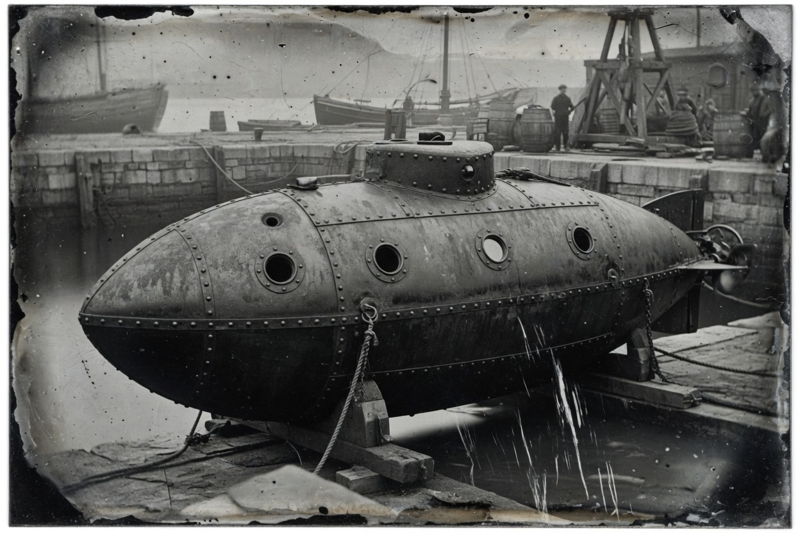
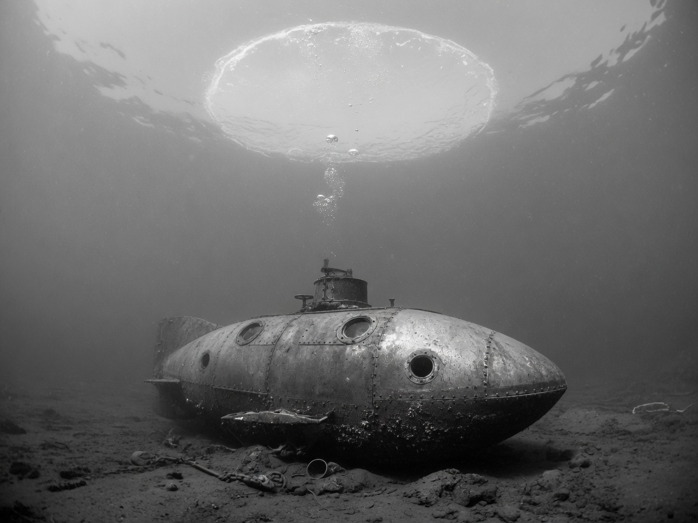
Russia wanted something that could sting a superior fleet in the Black Sea. In May 1855 Bauer was commissioned to build Diable Marin — Sea Devil — at the Leuchtenberg Yard in St Petersburg. A dolphin hull, half-inch iron, two human treadmills, an auxiliary sail for the surface. Designed to go to 150 feet. In practice she was good for about 50. One hundred and thirty-three trials without mishap, then seaweed fouled the propeller, water came in the tower, and the crew got out. She later sank for good off Ochta.
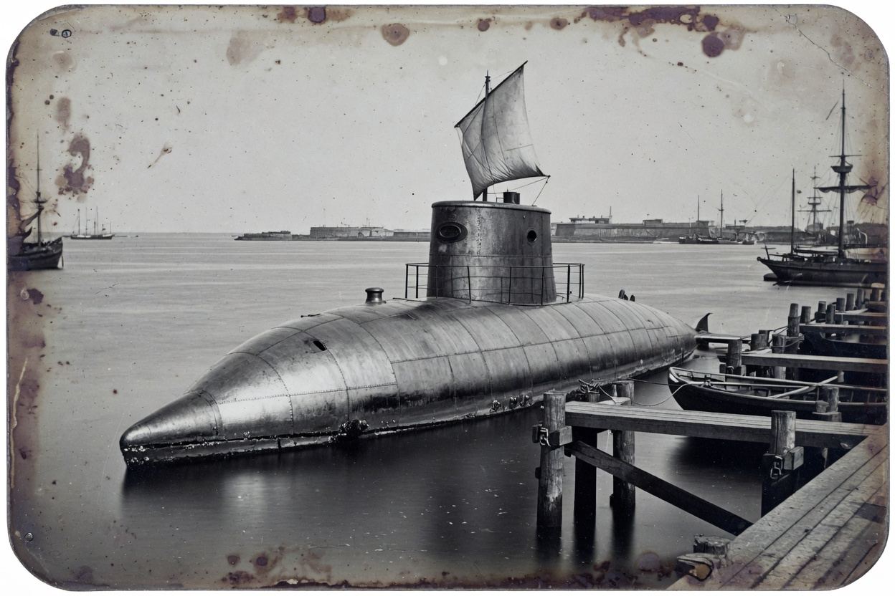
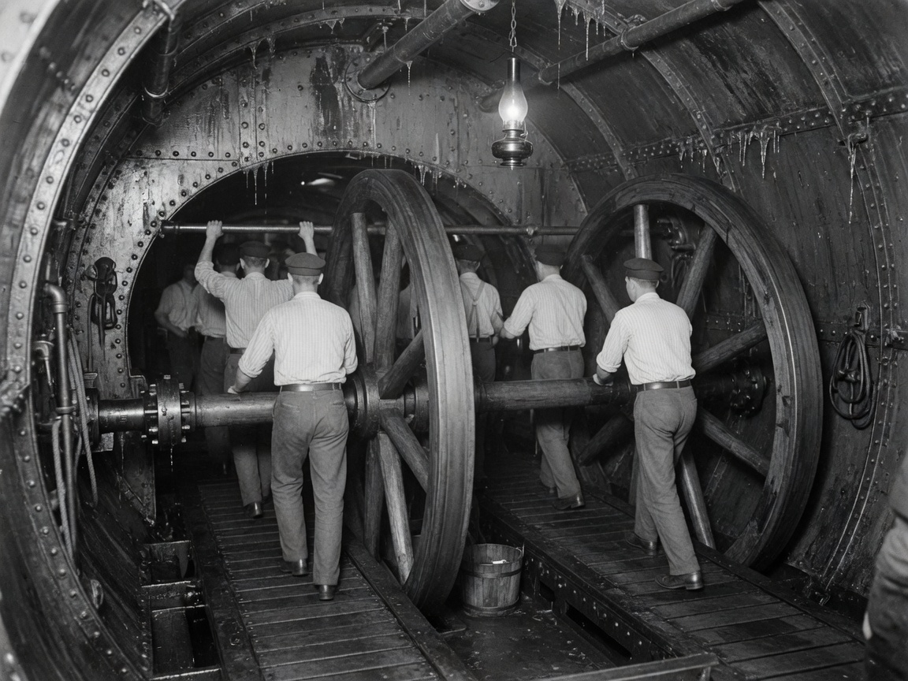
The first wholly Russian boat was built by a St Petersburg photographer, Ivan Aleksandrovsky, between 1863 and 1866: 355 tons of iron, compressed air driving two propellers. It collapsed at too great a depth in 1877. The same year S. K. Dzhevetsky launched a four-metre steel egg propelled by bicycle pedals, with leather gloves built into the conning tower so the lone occupant could stick mines onto an enemy hull by hand.
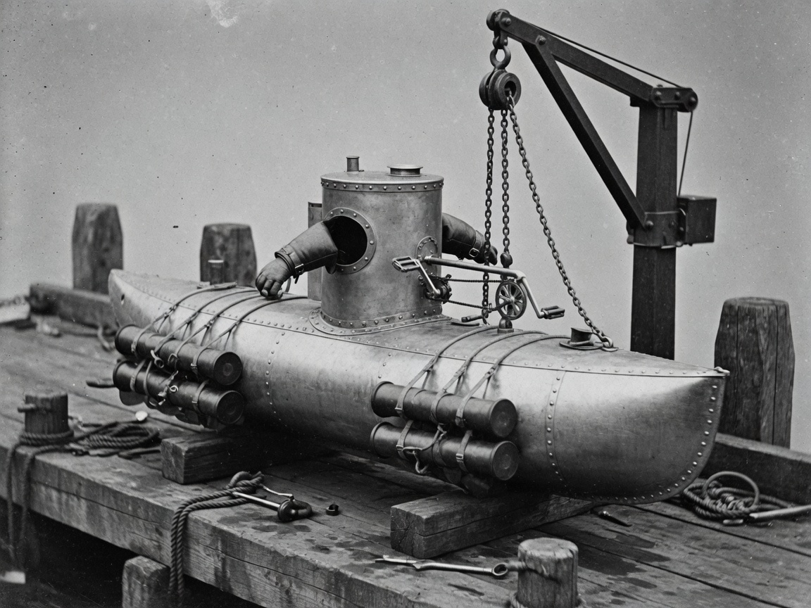
Dzhevetsky’s idea of a weapon Pedals. Leather gloves. Charges with rubber suction cups. Later the gloves became the famous “drop collars” — torpedoes hung outside the hull, cheap, numerous, and forever going off at the wrong time.
The Ministry of Coastal Defence was so impressed it ordered fifty of the little boats. Thirty-four went to Sevastopol, sixteen to Kronstadt. Then, in 1886, coastal defence was handed from the Navy to the Army, and the fleet of mini-subs finished their careers as bridge pontoons and buoys. Official Russian interest in the submarine went to sleep for almost twenty years — until Japan woke it up.
Chapter 02
1904 — 1921
The Russo-Japanese War is the moment Russia decides it cannot live without submarines, and also the moment it learns it cannot improvise them in time. When fighting started in February 1904, Japan had none. Russia had one boat worth the name: Bubnov’s 113-ton Delfin, which had just finished trials. On the morning of 20 June she was overloaded with extra trainees, a paddle steamer threw a wave over the open tower, a man jammed in the hatch, hydrogen and petrol exploded, and she foundered. Six men lived. It was the second submarine disaster of the twentieth century.
What followed was a shopping spree. Bubnov boats from the Baltic Yard, shipped in pieces on the Trans-Siberian. Holland boats from Electric Boat. Lake boats from Bridgeport. Germania boats from Kiel. Kaiser Wilhelm even gifted the Tsar a 16-ton experimental toy called Forel, which promptly foundered twice.
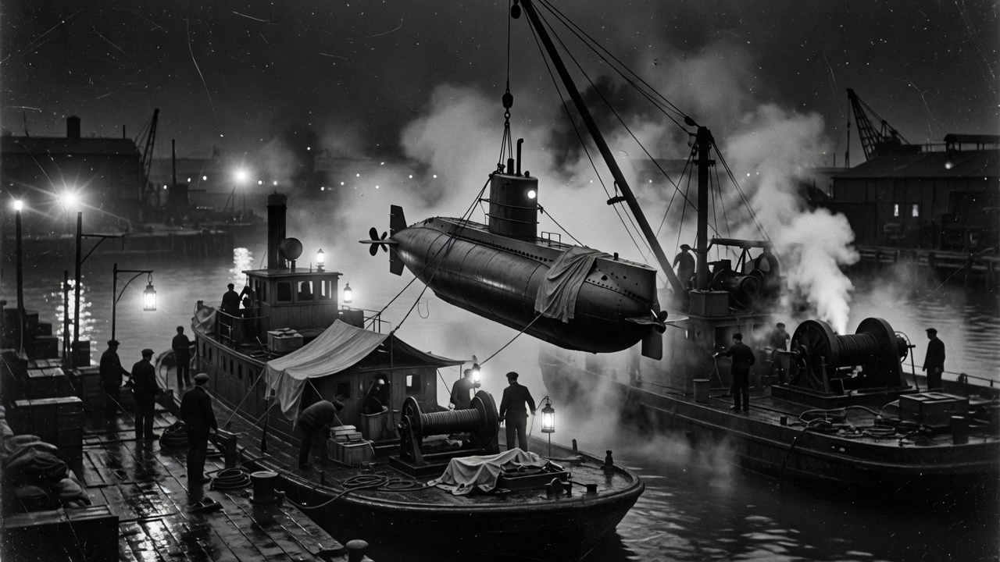
Simon Lake’s Protector, 1904 Lake smuggled her out of Bridgeport on a Saturday, when government offices were closed, and lifted her onto a steamer at sea. A suspicious Russian gunboat almost confiscated her as a Japanese plot. She arrived at Kronstadt five days before Lake did — just in time to hear about Delfin.
The Lake Alligator class was promised as a 410-ton ocean boat that could steam from Kronstadt to Port Said without refuelling. On trials they “invariably stood on end, first by the bow, then by the stern.” American engineers were baffled. Russian officers, given a blank cheque of a million roubles, simply ripped out four engine cylinders and a useless gun, added ballast pumps, and got the boats to dive in five minutes. Breemer, who is not sentimental about the Imperial Navy, calls this “testimony to a Russian ingenuity that Westerners are wont to ignore.”
They still arrived too late for Tsushima. Perhaps fourteen boats reached Vladivostok; nine were ready for sea; they were used as coastal scouts for a battlefleet that no longer existed. The war did something more important than sink ships. It committed Russia, permanently, to the submarine.
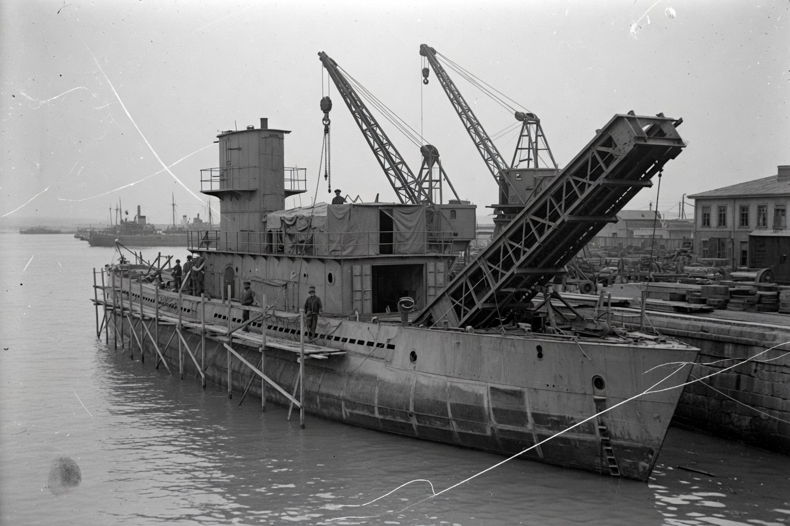
Between the wars of 1905 and 1914 the submarine grew up everywhere: 150 tons became 800, diving times fell from twenty minutes to five, wireless arrived, deck guns arrived. Russia kept pace, and also kept its talent for the fabulous. Mikhail Nalyetov, a railroad engineer who had watched mines wreck Port Arthur, designed Krab. Dzhevetsky built Pochtoyy, an early closed-cycle boat that ran its petrol engine underwater on bottled air — and left a long, very noticeable trail of exhaust bubbles.
In 1909 someone proposed a 4,500-ton armoured cruiser-submarine with 36 torpedo tubes and a range of 18,500 nautical miles. In 1911 an engineer named Shuravlev offered a 5,000-ton minelayer for 150 mines. None were built. The pattern, Breemer says, never really dies: the Navy could not decide whether it wanted mosquito boats for the coast or monsters for the ocean, so it sketched both and funded neither properly.
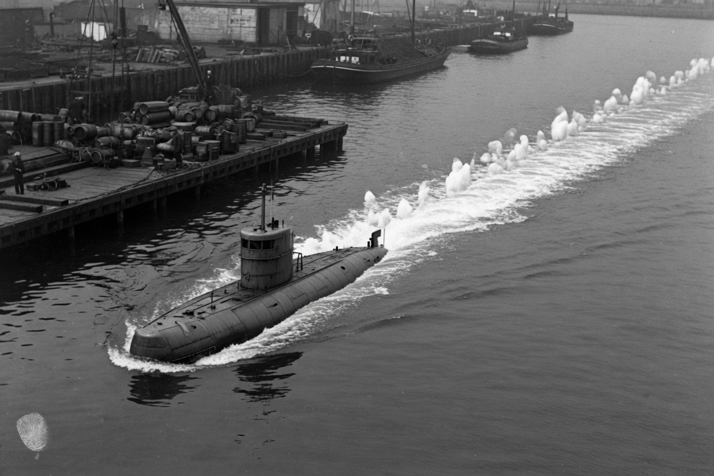
Pochtoyy’s tell Closed-cycle propulsion, 1908. The engine ran underwater. So did a trail of bubbles that told the whole harbour where you were.
When the First World War came, Russia had about as many submarines as Germany, in at least nine different classes, most of them older. In 1915 Baltic boats fired fifty torpedoes and hit nothing. The fifteen German freighters they did sink were mostly shot up with deck guns or boarded with demolition charges. Average large-boat patrol: five or six days a month. British E-class boats, sent through the Danish Straits, did the real damage — so much so that Prince Heinrich of Prussia told his captains a British submarine was worth as much as a Russian armoured cruiser.
Then revolution, Brest-Litovsk, scuttling at Hango, internment at Bizerte, boats dragged onto the Volga to fight a civil war. By 1921 the Imperial submarine fleet had, in the words of an American intelligence report, “ceased to exist.”
Chapter 03
1921 — 1941
The Tenth Party Congress decided to rebuild a navy out of scrap, fuel shortages, and leftover Leopards renamed for the revolution: Farm Labourer, Commissar, Red Army Trooper, Poor Peasant. Strategy was the Young School in Bolshevik clothes — delay an enemy landing long enough for the Red Army to arrive. Submarines as a fortress moat.
Then the numbers went mad.
By 1934 the Pacific already held more submarines than the Imperial Japanese Navy. Foreign papers called it a mystery fleet. The Japanese said 80, then 100, “more arriving each week by the Trans-Siberian.” A French journal accused Tokyo and Berlin of inflating the threat so they could rearm. The truth sat in the middle, and it was still astonishing: from 20 boats in 1932 to 205 in 1940, with about 43 percent of them in the Pacific.
They were not, however, a fleet for hunting Japan on the high seas. The bulk were medium Shchuka boats and tiny Malodki — “small boats” — 160 tons, sixteen men, two torpedoes that had to be loaded from outside before leaving port. Built in sections at an inland yard in the Urals, trialled in the Caspian, then strapped to special railroad cars and sent to Vladivostok.
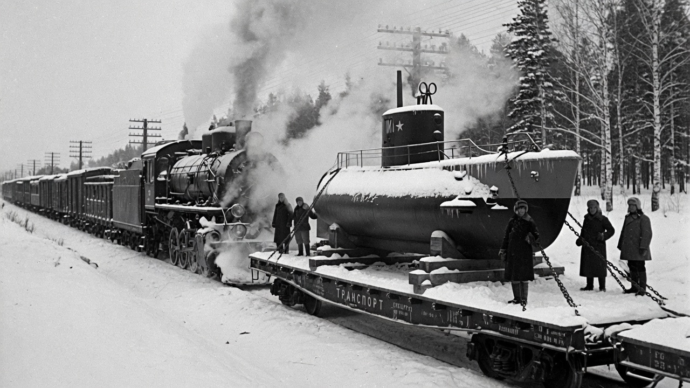
The Trans-Siberian navy Malodki class, Series VI: 37.8 metres, 160 tons, diving limit 50 metres. Geography was the first design constraint. If you cannot sail a boat to the Pacific, you send it by train.
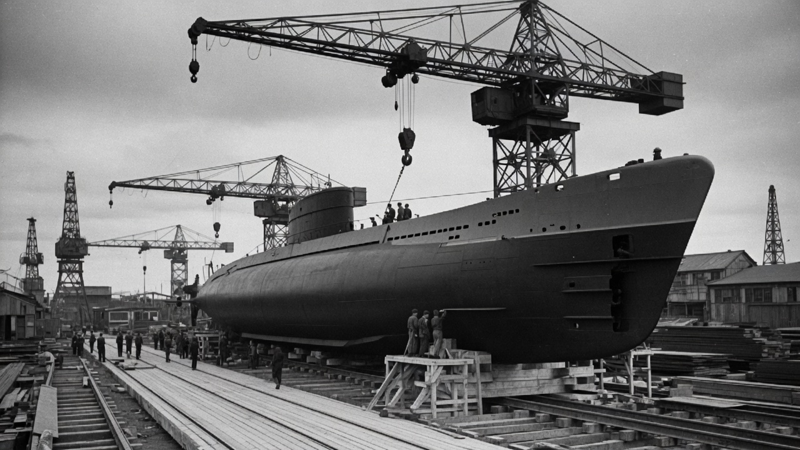
The good boat of the 1930s was the Stalinetz, or S-class. Unhappy with their own Pravda cruisers — which took 90 seconds to dive and whose propellers came out of the water in a swell — the Soviets bought a design from a Dutch front company in The Hague, Ingenieurskantoor voor Scheepsbouw. It was a German office, staffed by German engineers, selling what would become the Type VII. The S-boat could run 10,000 miles at 10 knots and dive twice as fast as a Pravda. Forty-two to fifty-three were completed.
Stalin, meanwhile, wanted a big navy: 59,000-ton battleships, battlecruisers, a carrier the Americans would not sell him the blueprints for. The submarine expression of that hunger was the K-class “cruiser,” 1,500 tons, 15,000-mile range, two 100 mm guns, and a folding-wing spotter plane that proved too frail to take off at sea. None of the K-boats ever carried their organic eyes.
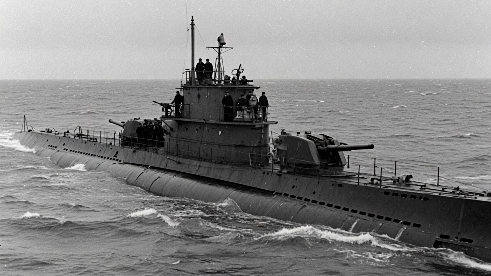
K for Kreiserny A cruiser that happened to dive. Twenty-four torpedoes, twenty mines, two 100 mm guns. In the Arctic those guns sometimes outclassed the escorts.
“There are as many different operating classes as there are letters in the alphabet.”Breemer, on the 1980s fleet — a habit that started here
Chapter 04
1941 — 1945
On the night of 21 June 1941 the Soviet Navy went to Readiness State No. 1. It owned the largest submarine fleet on earth: somewhere between 213 and 218 boats, more than Italy and the United States combined. In the Baltic, not one of them was at sea when the Germans came at dawn.
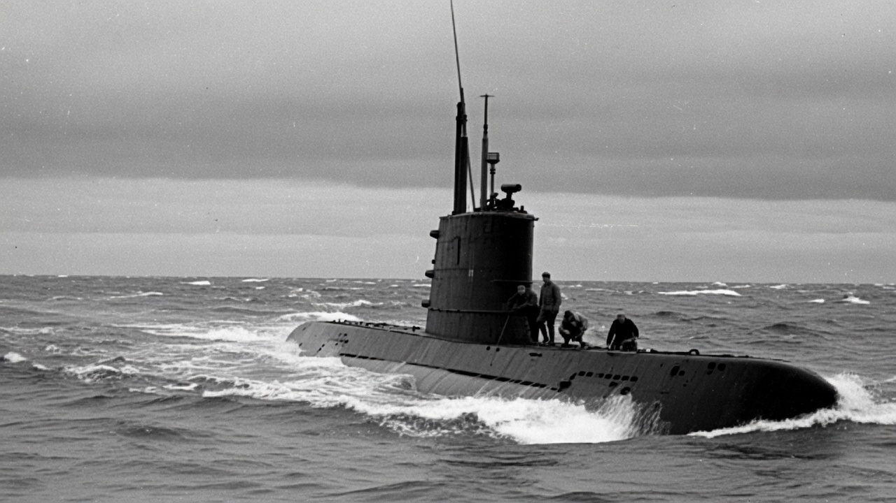
S-class, Baltic As good a seaboat as a German Type VII — in fact, it was a German design. Fighting beside it were Dekabrists from 1931 and, later, Whiskeys from the 1950s. New and old, always, at the same time.
The Baltic campaign is the cruel centre of the book. Geography first: a shallow, narrow, frozen-half-the-year sea, with German and Finnish armies on both shores by winter. Then the barrier. In 1943 the Finns and Germans hung the Walross net from Porkkala to Naissaar — thirty miles across, 180 feet deep — and seeded the Gulf with another 10,000 mines. Several Soviet boats tried to force it. None got through until Finland quit in September 1944. Twenty-two months locked in the eastern Gulf.
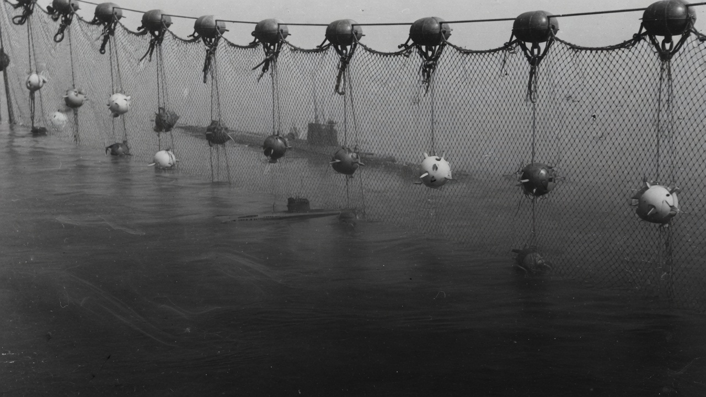
Walross, 1943 The most successful anti-submarine barrier in naval history. A Soviet account closed the subject: further attempts “made no sense.”
When boats did break out, in 1942, they still hunted the way the Tsar’s captains had: sitting in a drawn square of water, waiting for someone to steam through it. They fired one torpedo when they should have fired a spread. Shchuka boats had a design flaw — tubes slow to flood after a shot — so the bow went light and the boat broached, often with the political officer wanting to “see for himself” and finish the job with a gun. German merchants in the Baltic sailed without escorts. That is the sentence that tells you how the campaign went.
In the Black Sea the fleet became a trucking company. Submarines ran cargo and wounded in and out of besieged Sevastopol, reserve torpedoes dumped to make space. In the Arctic, K-boats laid mines and dueled escorts with their deck guns; K-21 claimed a hit on Tirpitz that German records do not show. The Pacific force, as large as the other three put together, sat out the war until the last eight days against Japan. No Pacific boat fired a shot in anger.
| Fleet, 1939–45 | In service | Lost | Ships sunk | Tons per boat lost |
|---|---|---|---|---|
| Germany | 1,162 | 785 | 2,808 | 18,700 |
| United States | 288 | 52 | 1,178 | 93,500 |
| USSR (inferred) | 272 | 109 | ~160 | 3,692 |
Breemer’s Table 10, after Lindsey. Soviet ship counts are Western estimates; Moscow never published a full loss list, even forty years later.
The comparison is unfair in one direction and fair in another. Unfair: the Soviets fought a land war in a frozen cul-de-sac; the Americans fought an ocean war against a merchant marine. Fair: two of every five Soviet boats that saw service were destroyed, and the fleet did not change the war. Breemer’s gentlest line is also his hardest. The Soviet Navy in 1941–45 was not the Army’s assistant. It was the Army’s dependent.
Chapter 05
1945 — 1960
Churchill called the Battle of the Atlantic a close-run thing. Within months of the U-boats raising the black flag, Western admirals were sure the next one would be worse — because the Soviets had the Type XXI.
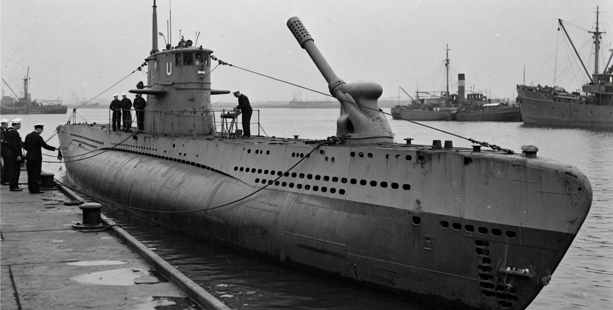
The nightmare had a number attached: 1,200 submarines, Admiral Kuznetsov’s stated goal in 1948. Navy Secretary Sullivan told the Navy League the Soviets would be launching Type XXIs at 200 a year by 1951. Hanson Baldwin, in the Times, thought that “excessive.” Baldwin was right. Leningrad and Nikolayev were rubble. Germany had commissioned 1,100 ocean U-boats in the war; the Soviets, fewer than 60. What actually left the yards through 1950 were pre-war designs, almost none of them with snorkels.
The boat they did build, in industrial quantities, was the Whiskey.
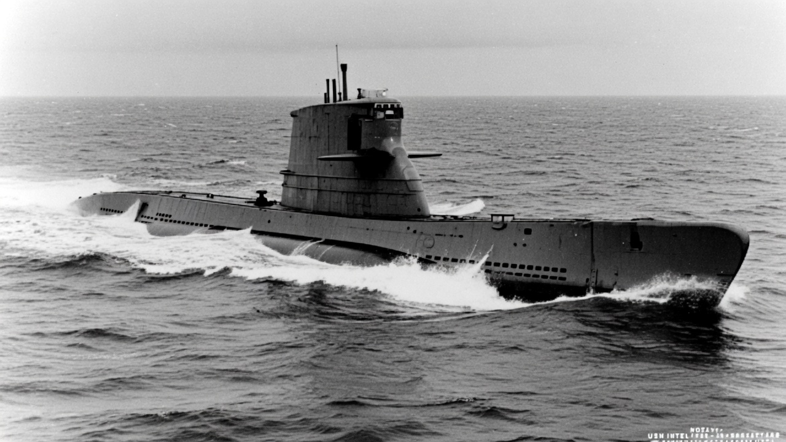
Whiskey, Series V 236 boats, 1951–57, four yards. NATO thought it was a Type XXI. It wasn’t. High freeboard, guns on the early marks, snorkel only from about 1955. About 50 still listed in 1986. The workhorse of a coastal defence that the West kept mistaking for Dönitz.
ONI’s 1950 war plan put Malodkis off the British Isles and K-boats west of Central America. Range arithmetic kills the picture. Murmansk to a patrol line off the American coast is about 4,000 nautical miles. A Series XIII Leninetz had 10,000 miles in her at seven knots. She would burn 80 percent of her endurance on the commute. The real Soviet plan, as far as Breemer can reconstruct it, was older than NATO: layered coastal defence against amphibious assault while the Army drove to the Atlantic. Zone one, submarines. Zone two, mines. Zone three, cruisers. Stalin died, the battlecruisers died with him, and Khrushchev dragged the Navy, “kicking and screaming,” into missiles.
Along the way: Zulu, a more XXI-shaped patrol boat, 26 built, six of them the Navy’s first ballistic-missile submarines. Quebec, 30 coastal boats, briefly rumoured to have a Walter peroxide plant, nicknamed Cigarette Lighter after a series of engine fires. And the first awkward marriages of missile and hull — Whiskey Twin-Cylinder, Whiskey Long Bin — tubes welded onto diesel boats that then became unstable. One probably sank. The P-5 cruise missile failed its acceptance test. The first naval ballistic missile, a seagoing Scud, leaked and would not guide. Nothing about this looks, in retrospect, like a fleet about to close the North Atlantic.
Chapter 06
1960 — 1979
USS Nautilus went to sea in 1954. Leninsky Komsomol, the first Soviet nuclear boat, commissioned on 8 April 1958. Four years is not a disgrace. What is striking is how the Soviets then did the opposite of the Americans: instead of a string of prototypes, they series-built three classes around the first reactor that worked. Hotel, Echo, November — the HEN group. Same pressurized-water plant, cousin to the icebreaker Lenin, which Admiral Rickover toured in 1959 and called a sloppy job. The icebreaker later had a melt-down.
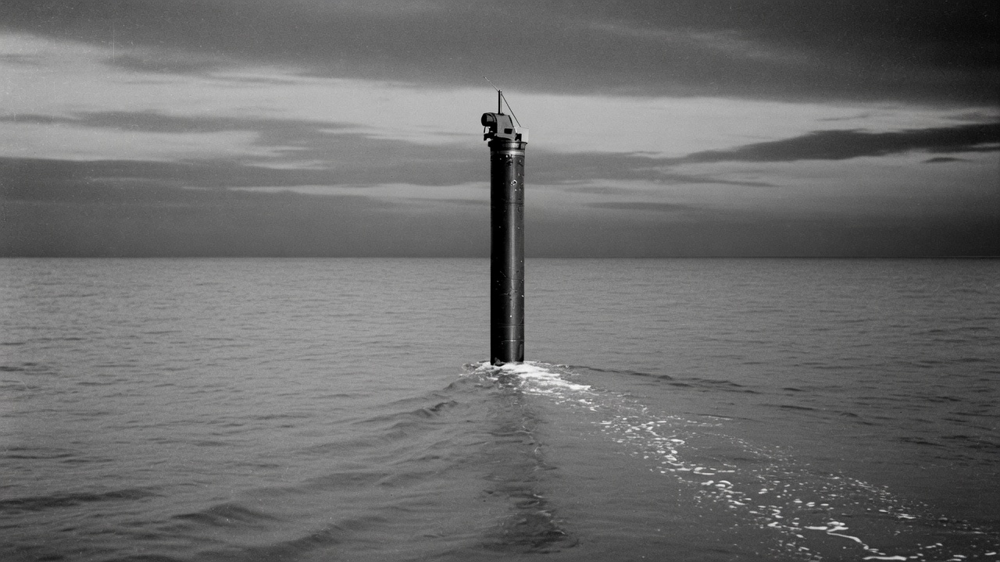
The visible navy was never the point Soviet boats were off Norfolk in 1948, off Eniwetok during the bomb tests, in the Adriatic from Albanian pens. The surface fleet “went to sea” in the 1960s. The submarines had been there for a decade.
The mission of HEN was not, first, to copy Polaris. It was to kill carriers before the carriers killed the homeland. Novembers on a patrol line. Hotels and Echos with crude missiles against ports. Foxtrot, 62 of them, as the diesel workhorse that Western navies still bump into at both ends of the earth. Then the second generation: Victor, Yankee, Charlie.
Charlie is the one that changed tactics. Eight SS-N-7s, launched from underwater, flying at 300 feet, twenty-five nautical miles, about two minutes of warning. The old wall between anti-submarine and anti-air warfare fell down. A ship now had to fight both at once. Echo II, by contrast, still had to broach, raise tubes, and sit on the surface for half an hour while a turbojet cruise missile flew out to 150 miles under the eye of a Bear D circling overhead. In an exercise, that looks like a system. In a North Atlantic squall, the Bear’s radar range halves and the submarine is a billboard.
Yankee was supposed to be the Soviet Polaris. It was 50 percent heavier, twice the horsepower, and one of the easiest boats in the ocean to hear — a “rumbling train,” Western crews called the early Soviet nuclears, and fitted their own boats with noise-makers so exercises would not be too easy. The first Yankee patrol within range of the American east coast came in 1968. Defense secretaries assumed the Soviets would copy the American pattern and keep half the force on station. They never did. Three in the “Yankee box,” two in the Pacific, and that was the ceiling, even when 33 boats existed.
Why? The rest of the book is, in a sense, an argument about that question. James McConnell read Admiral Gorshkov and heard a doctrine of withholding: keep the missiles for the second day, for bargaining, for the peace. Michael MccGwire heard vulnerability, then a short-war plan, then a long-war plan, then “bastions” — defended patches of the Barents and the Sea of Okhotsk where the Deltas could fire their 4,000-mile missiles without ever leaving home ice. By 1980 almost everyone had converted to some version of the bastion. The evidence, Breemer is careful to say, is inferential. Soviet writing never uses the word.
“We never dreamed that the thing would be that big. It is a monster.”Rear Admiral Sumner Shapiro, Director of Naval Intelligence, on Typhoon, 1981
Chapter 07
1979 — 1989
Brezhnev told Ford at Vladivostok: if you build Trident, we will build Taifun. The West thought he meant a missile. He meant a submarine the length of a football field.
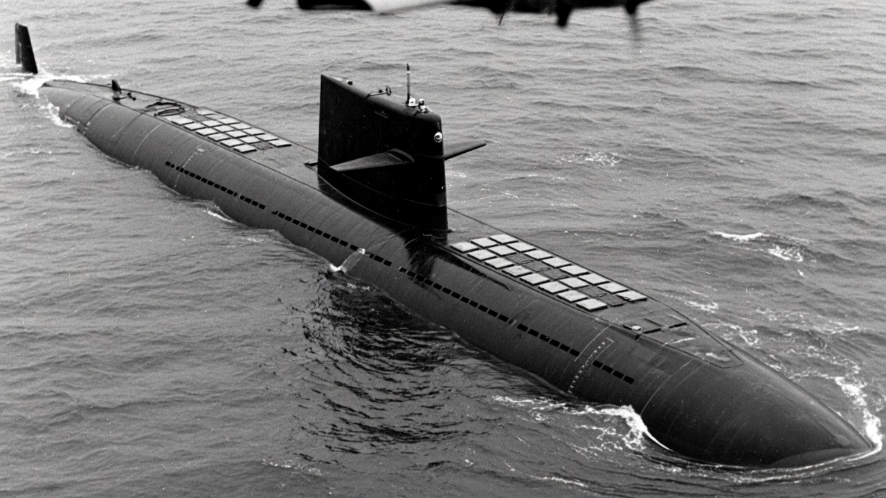
Typhoon 170 metres, something like 25,000 tons submerged, twenty solid-fuel SS-N-20s with eight warheads each. Missiles sit forward of the sail — unique. Double hull, perhaps six feet of water between the shells. Two reactors. A crew of 150. Built at Severodvinsk, about one a year.
4 metres — Dzhevetsky’s first boat, 1877
170 metres — Typhoon, 1980
Why so large? Shapiro’s people did not know. Extra crew, extra endurance, a last-ditch anti-aircraft missile against Orion patrol planes, room between the hulls to eat a torpedo, a way to get rid of the noisy “hump” that made Deltas so easy to hear. All of those, perhaps. Also this: the Soviet Union has always liked a reserve. Between 1977 and 1986 it built about 3,000 ICBMs and SLBMs against a replacement need of roughly 1,000. Typhoon looks like a boat you could reload.
Beside it, almost as a joke on the analysts, they kept building Deltas — including a Delta IV with a brand-new liquid-fuel missile. Hi-lo mix, leftover steel, or two different jobs. Nobody could agree. Then Oscar: 12,000 tons, twenty-four SS-N-19s, a “battle submarine” so big the West compared it to a floating battery, probably meant to sit in a barrier and ambush carriers with help from a satellite. Alfa: titanium, 40-plus knots, so deep that most Western torpedoes of the day could not follow, so loud at speed that it advertised itself. A 1950s answer to a race the West had already stopped running.
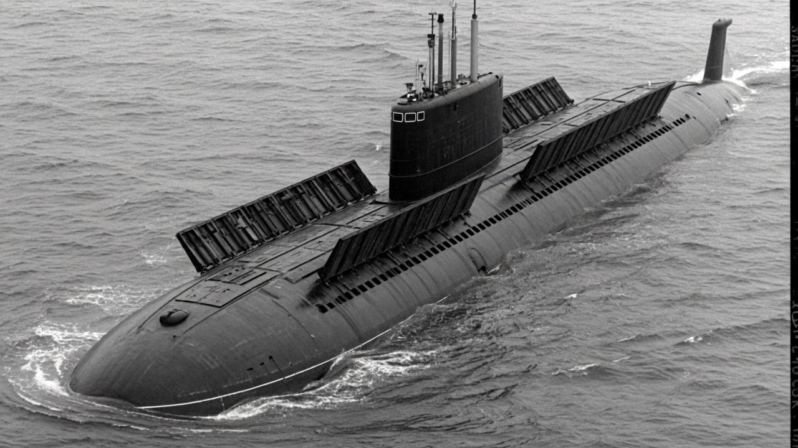
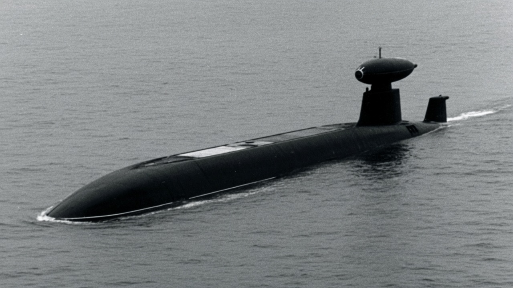
The quiet revolution is the book’s last turn, and the one that aged least. Until Victor III, Soviet boats lagged American ones by ten to fifteen years in radiated noise. Victor III closed it to about seven. Akula and Sierra, launched in the mid-1980s, were suddenly in the neighbourhood of a Los Angeles. Toshiba had sold milling machines that could cut a quieter propeller. The Walkers had sold the fact of SOSUS. Breemer’s point is ruder than either scandal: the physics was in the open literature. “All the Soviets had to do,” a U.S. admiral told the Senate, “was check out the book.”
Diesel never died. Kilo arrived as the Typhoons and Oscars did, 2,500 tons, stubby, exportable — India, Poland, Romania, Algeria. The United States, having gone all-nuclear, could no longer even sell a modern conventional boat. Five navies have built nuclear submarines. Only one of them refused to keep a diesel line.
Test or collapse depths as published in 1989. Alfa’s range is the rumour mill; even the low end put it under most Western torpedoes of the day.
By 1985 more than half the fleet was over twenty-one years old. Production had fallen from eighty-plus boats in 1955 to about six. Breemer’s last forecast: a smaller force, maybe 200 general-purpose boats by the mid-1990s, quieter, used not as a Maginot line across the approaches but as a moving hunt — perhaps off Norfolk, where a pack of Victor IIIs had already appeared. Quantity had been the Soviet answer for a century. Quality was arriving late, and it was going to cost them the numbers that made the old answer work.
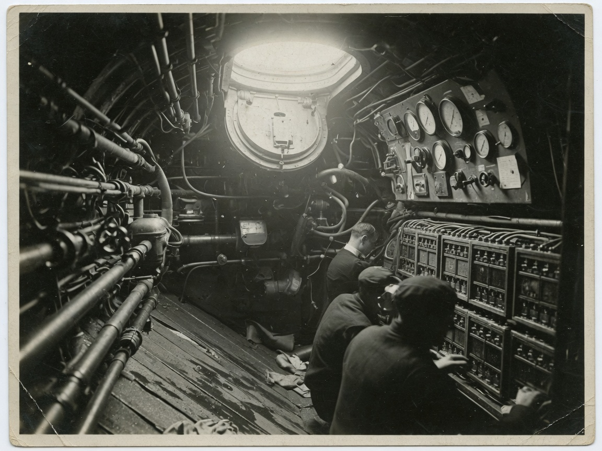
The constant From Delfin’s open tower to Typhoon’s double hull, the inside of the argument is always this: a few people, bad air, and a machine that does not forgive.
If you remember six things from Breemer’s book, remember these.
One. The first Russian submarine story is not a triumph. It is three men at forty-five feet, waiting for the physics to let them out.
Two. Russia kept more types, in service longer, than anyone else. Leopard beside Kasatka in 1915. Typhoon beside Whiskey in 1986. That is not romance. It is a maintenance nightmare that became a tradition.
Three. They were often first: the dedicated minelayer, the sectional hull you could put on a train, a periscope twenty-five years early, drop collars, a closed-cycle engine, a submarine-borne aircraft that could not take off. First is not the same as good.
Four. The world’s largest submarine fleet, in 1941, was built for a coastal war and then asked to do everything else. It rescued armies, ran cargo, sat behind a net, and did not starve Germany.
Five. The West spent the 1950s fighting a Battle of the Atlantic that Stalin was not equipped to start. The real Soviet trick was always the same: a moat for a land power, then missiles, then quiet.
Six. By the time the book went to press, the boats had stopped sounding like trains. That, more than Typhoon’s tonnage, is the sentence that should have kept people up.